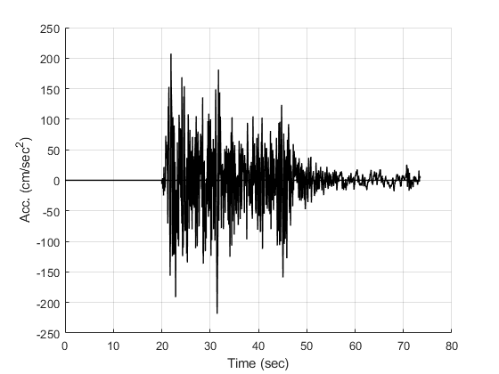
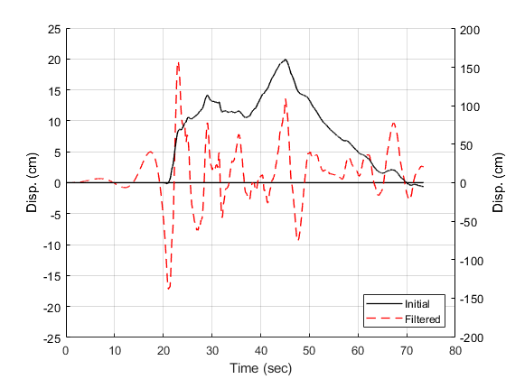

verification High pass Butterworth filter of OpenSeismoMatlab
Contents
Reference
Boore, D. M. (2005). On pads and filters: Processing strong-motion data. Bulletin of the Seismological Society of America, 95(2), 745-750.
Description
Verify Figure 1 of the above reference, for the 1940 El Centro analog recording. The displacements and velocities from unfiltered and filtered accelerations are shown. Filtering is done by using two passes of a fourth-order high pass (i.e. frequencies lower than the cut-off frequency are attenuated) Butterworth filter with cut-off frequency as shown in Figure 1.
Earthquake motion
Load earthquake data
eqmotions={'Imperial_Valley_El_Centro_9_EW'};
data=load([eqmotions{1},'.dat']);
t=data(:,1);
dt=t(2)-t(1);
xgtt=data(:,2);
Apply high pass Butterworth filter
Switch
sw='butterworthhigh';
Order of Butterworth filter
bOrder=4;
Cut-off frequency
flc=0.1;
Apply OpenSeismoMatlab
S1=OpenSeismoMatlab(dt,xgtt,sw,bOrder,flc);
Filtered acceleration
cxgtt=S1.acc;
Plot the time history of the initial ground motion
Initialize figure
figure() hold on plot(t,zeros(size(t)),'k','LineWidth',1) % Plot the acceleration time history of the initial ground motion plot(t,xgtt,'k','LineWidth',1) % Finalize figure hold off grid on xlabel('Time (sec)') ylabel('Acc. (cm/sec^2)') drawnow; pause(0.1)
Obtain displacement and velocity time histories
Switch
sw='timehist';
Do not use baseline correction
baselineSw=false;
Apply OpenSeismoMatlab to the initial ground motion
S2=OpenSeismoMatlab(dt,xgtt,sw,baselineSw);
Apply OpenSeismoMatlab to the filtered ground motion
S3=OpenSeismoMatlab(dt,cxgtt,sw,baselineSw);
Plot the displacement time histories
Initialize figure
figure() hold on plot(S3.time,zeros(size(S3.time)),'k','LineWidth',1) % Plot the displacement time history of the initial ground motion p1=plot(S2.time,S2.disp,'k','LineWidth',1); % Plot the displacement time history of the filtered ground motion p2=plot(S3.time,S3.disp,'r','LineWidth',1); % Finalize figure hold off grid on legend([p1,p2],{'Initial','Filtered'}) xlabel('Time (sec)') ylabel('Disp. (cm)') drawnow; pause(0.1)
Plot the velocity time histories
Initialize figure
figure() hold on plot(S3.time,zeros(size(S3.time)),'k','LineWidth',1) % Plot the velocity time history of the initial ground motion p1=plot(S2.time,S2.vel,'k','LineWidth',1); % Plot the velocity time history of the filtered ground motion p2=plot(S3.time,S3.vel,'r','LineWidth',1); % Finalize figure hold off grid on legend([p1,p2],{'Initial','Filtered'}) xlabel('Time (sec)') ylabel('Vel. (cm/sec)') drawnow; pause(0.1)
Copyright
Copyright (c) 2018-2023 by George Papazafeiropoulos
- Major, Infrastructure Engineer, Hellenic Air Force
- Civil Engineer, M.Sc., Ph.D.
- Email: gpapazafeiropoulos@yahoo.gr